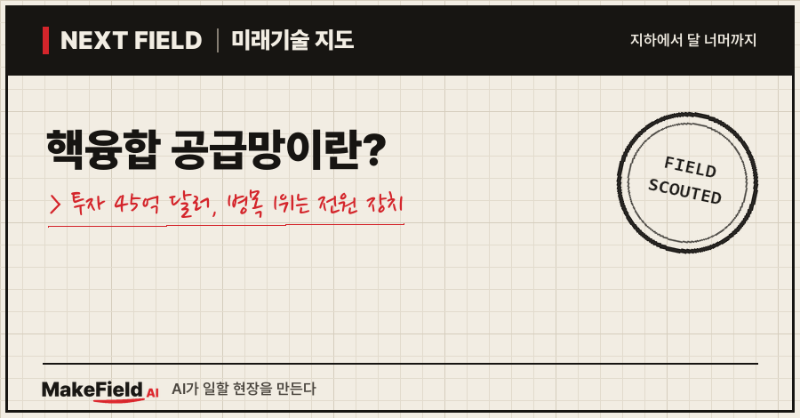
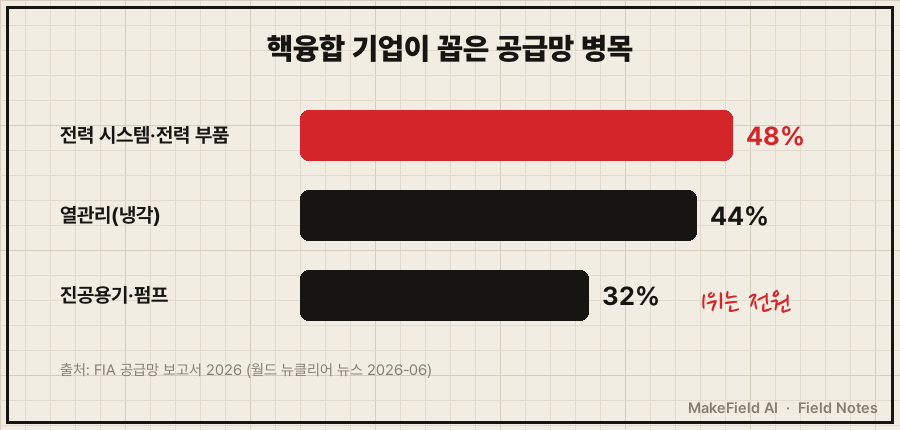
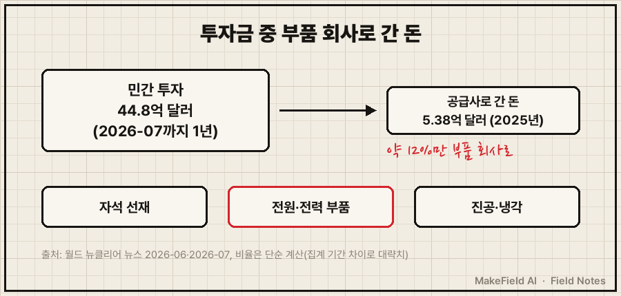
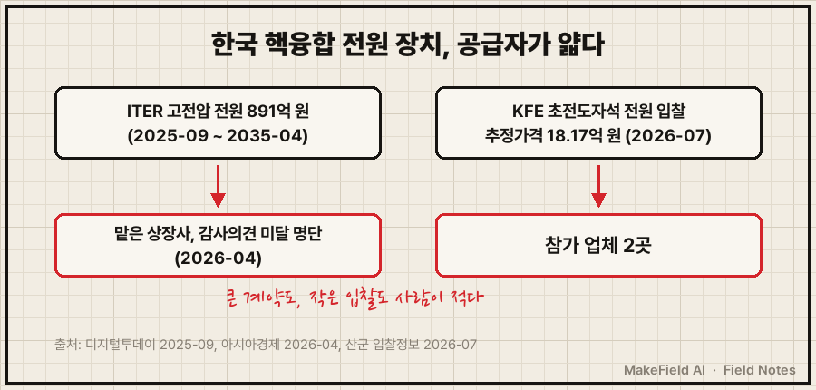

'인공태양' 핵융합에 1년 동안 44억 8,000만 달러(약 6조 원대, 단순 계산)의 민간 투자가 들어왔어요. 그런데 그 돈으로 장치를 지으려 하니 부품이 모자랍니다. 핵융합 공급망에서 가장 많이 꼽힌 병목은 뜻밖에도 초고온 플라즈마가 아니라 '전기를 대는 장치'였어요.
한 줄 요약: 핵융합산업협회(FIA)가 2026년 6월 낸 공급망 보고서에서 핵융합 기업들이 꼽은 가장 큰 공급망 병목은 '전력 시스템·전력 부품'(48%)이었고, 2025년 핵융합 기업이 부품·장비 회사에 쓴 돈은 5억 3,800만 달러로 1년 새 25% 늘었다(월드 뉴클리어 뉴스 2026-06). 같은 협회 집계로 2026년 7월까지 1년간 민간 투자는 44억 8,000만 달러였어요(월드 뉴클리어 뉴스 2026-07).
이 글은 2026년 11월 기준 공개 자료로 핵융합 부품 사슬이 무엇인지, 왜 전원이 병목인지, 그 돈이 누구에게 흘러가는지 차례로 풀어 봅니다.
1. 핵융합 공급망이란 무엇인가요
핵융합 공급망이란 핵융합 장치를 짓는 데 필요한 자석·전원·진공용기·냉각 장비 같은 부품을 만들어 대는 회사들의 사슬이다. 발전소가 아직 한 곳도 없는 산업이라, 지금 공급망의 고객은 '실험 장치를 짓는 회사와 연구기관'이에요.
💡 핵융합 — 가벼운 원자(수소 동위원소)를 1억 도 넘게 달궈 합칠 때 나오는 에너지로 전기를 만드는 기술. 태양이 빛나는 원리와 같아 '인공태양'이라 부른다. 지금 원전은 무거운 원자를 쪼개는 '핵분열'이라 방식이 반대다.
💡 토카막 — 도넛 모양 자기장 그릇에 초고온 플라즈마를 가두는 핵융합 장치. 한국의 KSTAR, 7개국이 프랑스에 짓는 ITER, 미국 CFS의 SPARC가 모두 이 방식이다.
토카막을 냉장고에 빗대면 쉬워요. 플라즈마는 냉장고 속 음식이 아니라 '어떤 벽에도 닿으면 안 되는 1억 도짜리 불'이고, 그 불을 공중에 띄워 두는 게 거대한 자석입니다. 자석이 세려면 엄청난 전류가 필요하고, 그 전류를 정확하게 넣고 빼는 게 전원 장치예요. 그래서 핵융합 장치는 '자석과 전원의 덩어리'에 가깝습니다.
2. 왜 지금 핵융합 공급망이 병목인가요
민간 투자가 크게 늘면서 여러 회사가 동시에 실험 장치를 짓기 시작했는데, 그 부품을 만들 공급사는 아직 적기 때문이다.
돈부터 보면 숫자가 커요. FIA 집계로 2026년 7월까지 1년간 민간 핵융합 기업이 모은 돈은 44억 8,000만 달러로, 협회가 집계한 6년 중 가장 많았어요. 6년 누적은 142억 4,000만 달러입니다(월드 뉴클리어 뉴스 2026-07). 피직스 월드는 이 증가 폭을 전년 대비 약 70%로 전했고, 민간 핵융합 업계 고용은 1만 6,000명을 넘었다고 썼어요(피직스 월드 2026-07).
💡 FIA(핵융합산업협회, Fusion Industry Association) — 미국에 본부를 둔 민간 핵융합 기업 협회. 매년 투자 보고서와 공급망 보고서를 따로 낸다.
그 돈이 공급망으로 내려오면 병목이 보여요. FIA는 핵융합 기업 25곳과 공급사 67곳을 조사했습니다(월드 뉴클리어 뉴스 2026-06).
| 공급망 병목(핵융합 기업이 꼽은 비율) | 비율 |
|---|---|
| 전력 시스템·전력 부품 | 48% |
| 열관리(냉각) 기술 | 44% |
| 진공용기·펌프 | 32% |
| 앞으로의 걱정: 핵융합 연료 순환 시스템 | 48% |
| 앞으로의 걱정: 극한 환경용 소재의 대량 조달 | 40% |

그림을 글로 정리하면, 핵융합 기업 절반 가까이(48%)가 전력 부품을 가장 구하기 어려운 칸으로 꼽았어요. 초전도 자석은 퀜치 같은 사고가 나면 모아 둔 거대한 에너지를 재빨리 빼내야 해서, 전원 장치가 단순히 전기를 대는 데 그치지 않고 보호 장치 역할까지 해야 합니다.
💡 퀜치 — 초전도 자석이 갑자기 초전도성을 잃고 저항이 생기는 사고. 자석에 모인 에너지를 재빨리 밖으로 빼내지 않으면 자석이 타 버린다. 전기 장판 과열 차단기의 아주 거대한 버전이 필요하다고 보면 된다.
자석의 재료도 좁은 문이에요. 고온초전도 선재는 SPARC 한 대에만 약 1만 km가 들어가고(커머셜 퓨전 뉴스레터), 독일 프록시마 퓨전은 실증 장치와 발전소 설계에 약 6만 km가 필요하다고 봤어요. 이 선재의 산업 규모 생산은 대부분 아시아에서 이뤄집니다(미국원자력학회 ANS 2026-09).
💡 고온초전도(HTS) 선재 — 영하 200도 안팎에서 전기 저항이 0이 되는 테이프 모양 전선. 이걸 감아 핵융합용 초강력 자석을 만든다. '전기가 손실 없이 흐르는 리본'이다.
3. 돈의 흐름 — 누가 사고 누가 파나요
사는 쪽은 투자를 받은 핵융합 기업과 국가 연구기관이고, 파는 쪽은 자석 선재·전원·진공·냉각 부품 회사다. 다만 투자금 중 공급사로 실제 흘러간 돈은 아직 일부다.

그림을 글로 옮기면, 1년 투자금 44억 8,000만 달러 가운데 부품 회사에 실제로 낸 돈(2025년 5억 3,800만 달러)은 약 12%예요(단순 계산, 집계 기간이 조금 달라 대략치). 나머지는 연구 인력·설계·시험 시설 등에 쓰입니다(추정).
| 흐름 | 내는 쪽 | 받는 쪽(예시) | 확인된 숫자 |
|---|---|---|---|
| 민간 투자 | 벤처캐피털·기업 | 핵융합 기업(예: CFS 8억 6,300만·프록시마 5억 1,800만·헬리온 4억 6,500만·이너시아 4억 5,000만 달러) | 1년 44억 8,000만 달러(월드 뉴클리어 뉴스 2026-07) |
| 부품 구매 | 핵융합 기업 | 자석·전원·진공·냉각 공급사 | 2025년 5억 3,800만 달러, 25% 증가(월드 뉴클리어 뉴스 2026-06) |
| 생산 설비 | 핵융합 기업·지방정부 | 선재 공장 | 프록시마 독일 선재 공장 1·2단계(2029년 말까지) 1억 4,000만 유로, 니더작센주 2,100만 유로 약속(ANS 2026-09) |
| 국제 조달 | ITER(한국핵융합에너지연구원이 계약 대행) | 국내 전원 장치 업체 | ITER 전자 사이클로트론 가열용 고전압 전원 891억 원, 2025-09~2035-04(디지털투데이 2025-09 공시) |
| 인력 | 핵융합 기업 | 전원 엔지니어 | 미국 잽 에너지 선임 펄스 파워 엔지니어 연 14만~20만 달러, 경력 10~15년 요구(잽 에너지 채용공고) |
💡 ITER(국제핵융합실험로) — 한국·EU·미국·중국 등 7개국이 프랑스에 함께 짓는 세계 최대 토카막. 각 나라가 부품을 나눠 만들어 보낸다.
💡 펄스 파워 — 전기를 커다란 축전지에 모았다가 백만분의 1초 단위로 한꺼번에 쏟아내는 기술. 일부 핵융합 방식의 심장이다. 물을 댐에 모았다가 한 번에 터뜨리는 것과 비슷하다.
공급사 쪽 분위기는 엇갈려요. 공급사의 75%가 2025년에 핵융합용 설비를 늘렸지만, 69%는 '핵융합 쪽 장기 수요가 잘 안 보인다'고 답했습니다(월드 뉴클리어 뉴스 2026-06). 돈은 들어오는데 몇 년 뒤 주문이 계속 올지는 확신하지 못하는 거예요.
※ 위 기업명과 수치는 산업 구조를 설명하기 위한 예시입니다. 특정 종목의 매수·매도를 권하는 글이 아닙니다.
4. 누가 하고 있나요 — 해외와 한국
해외는 민간 기업이 판을 키우고 있고, 한국은 정부 예산과 국제 조달이 중심이다.
- 미국·유럽 민간: CFS(미국)가 1년간 가장 큰 투자를 받았고, TAE 테크놀로지스와 제너럴 퓨전은 나스닥에 상장했어요. 조사 대상 56개 기업의 71%는 2030년대에 전력망에 전기를 보낼 것으로 봤습니다(월드 뉴클리어 뉴스 2026-07).
- 한국 정부: 2026년 핵융합 연구개발 예산은 1,124억 원으로 2025년 564억 원에서 99% 늘었어요. 새 사업은 한국형 혁신 핵융합 실증로 설계 기술 개발(21억 원)과 핵융합 연구 전반의 AI 도입(45억 원)이고, 초전도 도체 시험 시설도 함께 짓습니다(뉴스서울 2026-01).
- 한국 공급망: 한국은 ITER에 부품을 만들어 보내는데, 전원 장치 쪽은 공급자가 얇아요. 한국핵융합에너지연구원의 '초전도자석 전원장치 제작·설치·시운전' 입찰(추정가격 18억 1,700만 원)은 2026년 7월 14일 개찰에 2개 업체만 참가했습니다(입찰정보 사이트 산군 2026-07). ITER 고전압 전원 891억 원 계약(디지털투데이 2025-09)을 맡은 코스닥 상장사 다원시스는 2026년 4월 감사인 의견 미달로 상장폐지 사유가 생긴 54개사에 이름을 올렸어요(아시아경제 2026-04).

그림을 글로 정리하면, 큰 국제 계약을 맡은 회사는 감사의견 미달로 상장폐지 사유가 생겼고, 작은 국내 입찰엔 두 곳만 들어왔어요. 이 계약의 이행이 어떻게 될지는 공개 자료로 확인되지 않았습니다(미확인).
5. 언제 오나요, 한계는 무엇인가요
기업 다수는 2030년대 첫 전력을 말하지만, 공급망은 '수요가 계속 올지' 불확실하고 시장 자체도 아직 작다.
- 시장이 아직 작다: 세계 핵융합 기업의 연간 부품 구매액은 5억 3,800만 달러(월드 뉴클리어 뉴스 2026-06)로, 우리 돈 약 7,000억~8,000억 원대예요(단순 계산, 환율 1,300~1,450원 가정). 한 산업으로는 아직 초기입니다.
- 공급사도 확신이 없다: 공급사 69%가 장기 수요를 못 본다고 답한 만큼(월드 뉴클리어 뉴스 2026-06), 설비를 늘렸다가 실험 장치 일정이 밀리면 공장이 놀 수 있어요(추정).
- 일정은 '전망'이다: 71%가 2030년대 전력 공급을 본다는 건 기업들의 응답이에요(월드 뉴클리어 뉴스 2026-07). 아직 순에너지를 꾸준히 만들어 전기를 판 핵융합 발전소는 세계에 한 곳도 없습니다.
- 다음 병목이 줄을 섰다: 지금은 전원·냉각·진공이 문제지만, 기업들은 연료 순환 시스템(48%)과 극한 환경 소재(40%)를 앞으로의 걱정으로 꼽았어요(월드 뉴클리어 뉴스 2026-06).
자주 묻는 질문
Q. 핵융합 발전은 언제 상용화되나요?
정해진 시점은 없어요. FIA 조사에서 56개 기업의 71%가 2030년대에 전력망에 전기를 보낼 것으로 봤지만(월드 뉴클리어 뉴스 2026-07), 이건 기업 자체 전망입니다.
Q. 핵융합 공급망에서 가장 부족한 건 뭔가요?
핵융합 기업의 48%가 '전력 시스템·전력 부품'을 가장 큰 병목으로 꼽았어요. 그다음이 열관리(44%), 진공용기·펌프(32%)입니다(월드 뉴클리어 뉴스 2026-06).
Q. 한국은 핵융합에 얼마나 쓰나요?
2026년 정부 핵융합 연구개발 예산은 1,124억 원으로, 2025년 564억 원보다 99% 늘었어요(뉴스서울 2026-01).
오늘의 용어 정리
- 핵융합 — 가벼운 원자를 합칠 때 나오는 에너지로 전기를 만드는 기술('인공태양')
- 핵융합 공급망 — 핵융합 장치에 들어가는 자석·전원·진공·냉각 부품을 만드는 회사들의 사슬
- 토카막 — 도넛 모양 자기장으로 플라즈마를 가두는 장치(KSTAR·ITER·SPARC)
- FIA(핵융합산업협회) — 민간 핵융합 기업 협회, 투자·공급망 보고서 발간
- ITER — 7개국이 프랑스에 함께 짓는 국제핵융합실험로
- 고온초전도(HTS) 선재 — 저항 없이 전기가 흐르는 테이프형 전선, 초강력 자석 재료
- 퀜치 — 초전도 자석이 갑자기 저항을 갖게 되는 사고, 전원 장치가 에너지를 빼내 막는다
- 펄스 파워 — 모아 둔 전기를 순간에 쏟아내는 기술
지난 Next Field에서 AI 데이터센터가 가스터빈을 구하려고 3년 줄을 서는 장면을 봤다면, 오늘은 더 먼 미래의 발전소가 이미 부품 줄을 서기 시작한 모습을 따라가 봤어요. 투자금이 공급사로 더 많이 내려오는 날과 첫 핵융합 전기가 나오는 날, 어느 쪽이 먼저 올까요?
출처
[1] 월드 뉴클리어 뉴스(2026-06) — FIA '핵융합 산업 공급망 2026' 보고서: 2025년 공급망 지출 5억 3,800만 달러(25% 증가), 핵융합 기업 25곳·공급사 67곳 조사, 병목 전력 부품 48%·열관리 44%·진공용기·펌프 32%, 향후 우려 연료 순환 48%·소재 40%, 공급사 75% 설비 투자·69% 장기 수요 불투명
→ https://world-nuclear-news.org/articles/fusion-supply-chain-spend-up-big-challenges-remain
[2] 월드 뉴클리어 뉴스(2026-07) — FIA 투자 보고서: 2026년 7월까지 1년 민간 투자 44억 8,000만 달러(6년 중 최대), 6년 누적 142억 4,000만 달러, CFS·프록시마·헬리온·이너시아 투자액, TAE·제너럴 퓨전 나스닥 상장, 56개사 중 71% 2030년대 전력망 공급 전망
→ https://world-nuclear-news.org/articles/fusion-industry-raised-usd45-billion-over-past-year-report-says
[3] 피직스 월드(2026-07) — 민간 핵융합 투자 약 45억 달러로 약 70% 증가, 업계 고용 1만 6,000명 이상
→ https://physicsworld.com/a/private-investment-in-fusion-firms-jumps-by-4-5bn/
[4] 미국원자력학회 ANS(2026-09) — 프록시마 퓨전 고온초전도 선재 약 6만 km 필요, 산업 규모 생산은 대부분 아시아, 독일 선재 공장 1·2단계 1억 4,000만 유로·니더작센주 2,100만 유로
→ https://www.ans.org/news/2026-09-14/article-8385/proxima-signs-mou-with-lower-saxony-for-hts-tape-production/
[5] 커머셜 퓨전 뉴스레터 — 자기 가둠 방식 공급망 과제: CFS SPARC에 초전도 선재 약 1만 km 필요
→ https://www.commercial-fusion.com/p/magnetic-confinement-s-supply-chain-challenges
[6] 뉴스서울(2026-01) — 과기정통부 2026년 핵융합 연구개발 시행계획: 예산 1,124억 원(2025년 564억 원 대비 99% 증가), 실증로 설계 21억 원·AI 도입 45억 원 신규, 초전도 도체 시험 시설
→ https://newsseoul.co.kr/news/view/1065609609854714
[7] 디지털투데이(2025-09) — 다원시스 공시: ITER 전자 사이클로트론 가열용 고전압 전원 개발·제작 891억 원, 계약 대행 한국핵융합에너지연구원, 2025-09-03~2035-04-30
→ https://www.digitaltoday.co.kr/aigongsi/2307/daewonsys-iter-high-voltage-power-supply-contract
[8] 아시아경제(2026-04) — 감사인 의견 미달로 상장폐지 사유가 생긴 상장사 54곳, 코스닥 명단에 다원시스 포함
→ https://view.asiae.co.kr/article/2026040911190473192
[9] 산군 입찰정보(2026-07) — 한국핵융합에너지연구원 '초전도자석 전원장치 제작, 설치 및 시운전' 추정가격 18억 1,700만 원, 2026-07-14 개찰, 참가 2개사
→ https://www.sankun.com/bid-info/CzbxiNL157DquYhN8wEYTskq_WCKcd7_CO25KoTuaAU
[10] 잽 에너지 채용공고(브레이크스루 에너지 잡보드) — 선임 펄스 파워 엔지니어 연 14만~20만 달러, 커패시터 뱅크·마크스 발생기 설계, 경력 10~15년·50kV 이상 시스템 경험
→ https://bevjobs.breakthroughenergy.org/companies/zap-energy-2/jobs/72162801-senior-pulsed-power-engineer